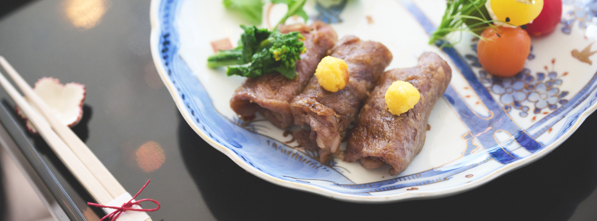
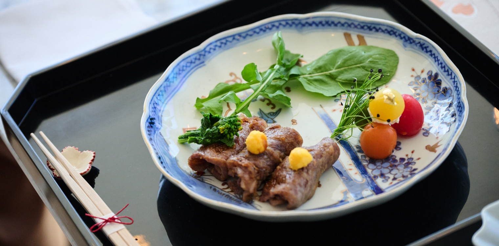
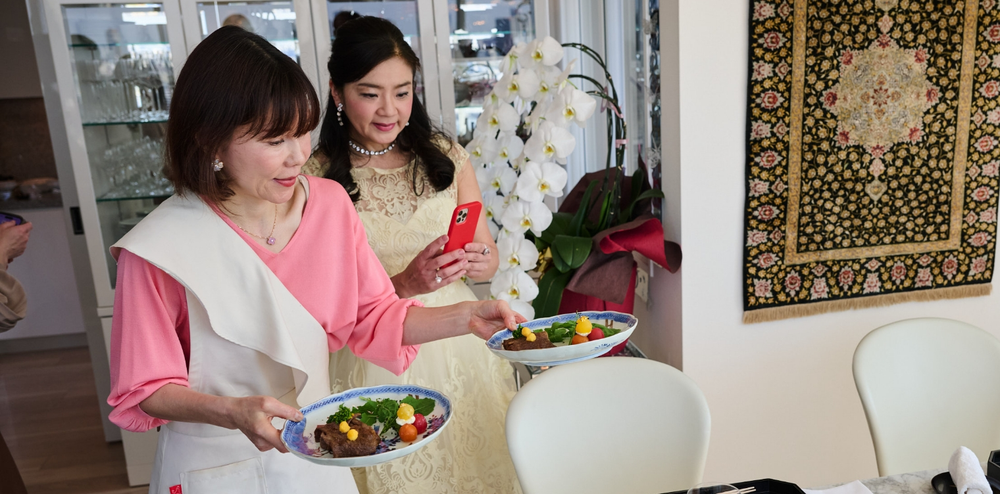
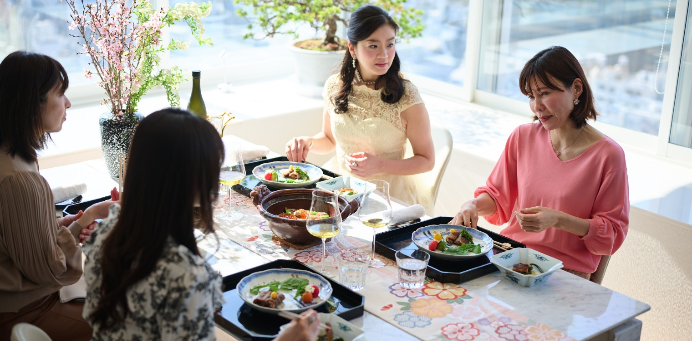
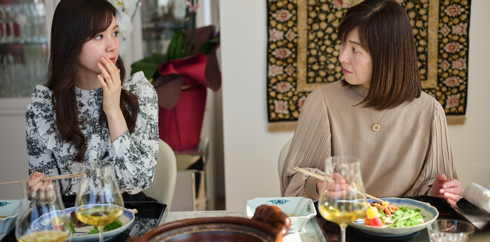

「日本の極み」を使ったホームパーティー
3
おもてなしすき焼き

ついで二品め、「おもてなしすき焼き」に使っていただいたのは、「但馬玄（神戸牛）すき焼用」。緑に囲まれた静かな環境で、牛に極力ストレスをかけないようにのびのびと育ててることが信条の〈上田畜産〉が作るブランド和牛です。独自配合の飼料を与えることで、上質な赤身と、低温で溶ける脂身の深い味わいを作り出し、まるでマグロの大トロのようである、とのことから「但馬玄（たじまぐろ）」と名付けられました。
厳しい「神戸牛」の認定基準をも満たした但馬が誇る上質な牛肉を、どのようにアレンジしていただいたのでしょうか。

- 内田みち代 さん
- こちら、あまり手をかけずに「丸めただけ」の盛り付けなんですね。すき焼きですから、やっぱり卵があったほうが、ということで、卵黄を混ぜた大根おろしを添えています。「日本の極み」を購入される方は、より上質なものを求められると思いますので、盛り付けもふさわしいものに。
お肉はちょっと粉を振った後に、タレで煮詰めて、冷めてもいただきやすく仕上げました。

- 壁谷玲子 さん
- これは一口で食べて良いんでしょうか（笑）。
- 内田みち代 さん
- そうですね、ぜひ一口で。
- 壁谷玲子 さん
- 一口でいただけてお客様も食べやすいですね…。
お肉、柔らかい！ それに大根おろし、黄色だけど大根のお味。

- 松野エリカ さん
- けっこう卵の味がしっかりしますね、私もやってみよう。
- 内田みち代 さん
- すき焼きなので卵も一緒に食べなきゃ！と思って（笑）。
- 松野エリカ さん
- お肉、とっても柔らかいですね。スジ感もなくて…。
- 壁谷玲子 さん
- 厚みもしっかり。
- 内田みち代 さん
- 冷めてしまうと普通は締まっちゃうのに、冷めても柔らかいなんてすごいことですよ。
- 壁谷玲子 さん
- （「たじまぐろ」＝マグロのよう、という説明を聞いて）
確かにこれは牛の大トロですね！
作り方を見る
【材料（4人前）】
・「但馬玄（神戸牛）すき焼用」4枚
（3 等分切り）（米粉をまぶす）
〈A〉
・純米酒 40cc
・味醂 35cc
・濃口醤油 35cc
・オーガニックシュガー小1/2
〈B〉
・大根おろし 3 cm分
・卵黄 1 個
〈C〉
・クリームチーズ 30g
〈D〉
・プチトマト（湯剥きしてはちみつをかける）
・お好みの野菜適量
【作り方】
- フライパンに油を入れ、肉の焼き色が変わったらAの1/3を入れ汁気が少なくなるまで煮絡ませ、取り出し、残りのAを煮詰めてかける。
- 器に1、B、C、Dを盛り付ける。